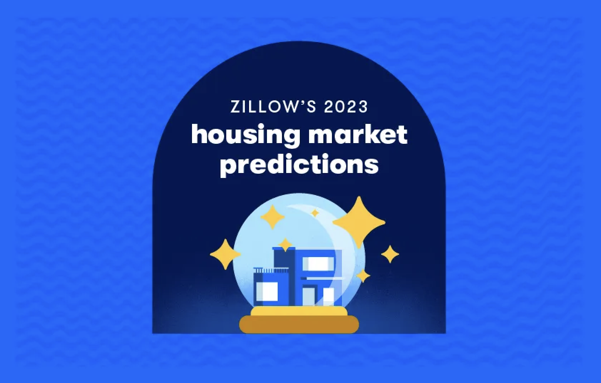

Real-world AI/ML systems
Explore the power and potential of AI/ML through curated research from various industries. Discover how AI/ML is revolutionizing sectors and driving innovation.

House Pricing Prediction with Neural Zestimate
Zillow • Real-Estate
Neural Zestimate, an upgraded version of Zestimate by training a single national-scale neural network model on many years worth of home details data to make the best estimate possible.
Train YOLOv8 Instance Segmentation on a Custom Dataset
Roboflow • CV
This blog explores how you can leverage the power of Roboflow and YOLOv8 Instance Segmentation to streamline your workflow and achieve outstanding results.
Get in touch
I would love to hear from you! Whether you have a question, a collaboration opportunity, or just want to say hello, don't hesitate to get in touch.
Email me: qin9611@gmail.com
Call me: +1 (201) 565-5998